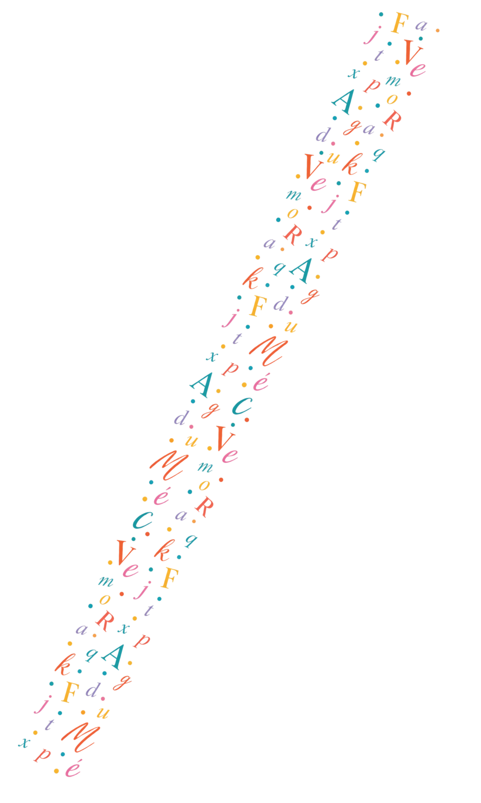
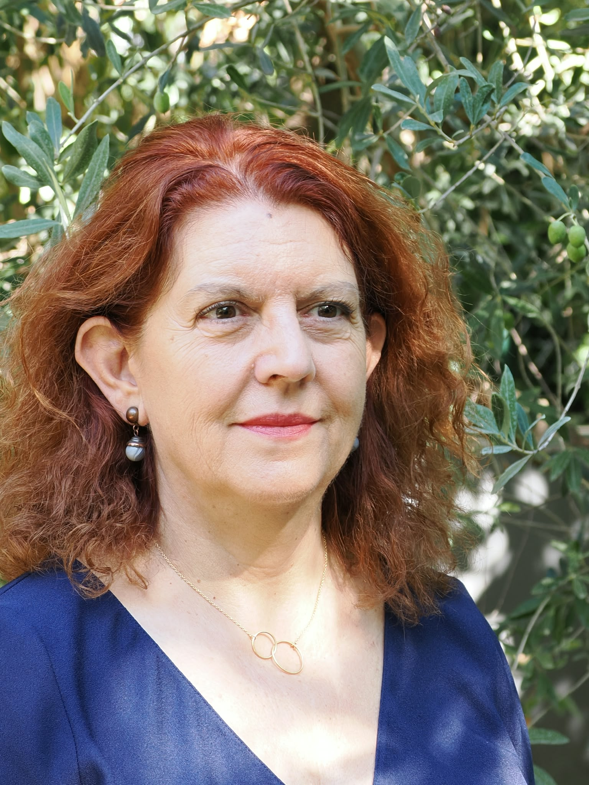
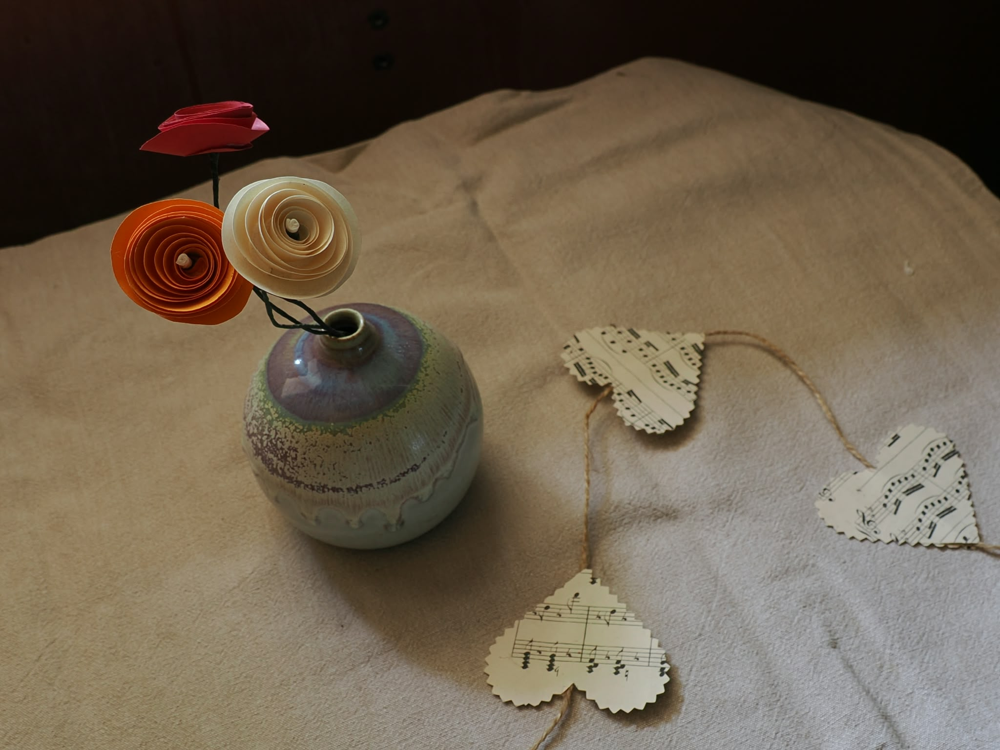
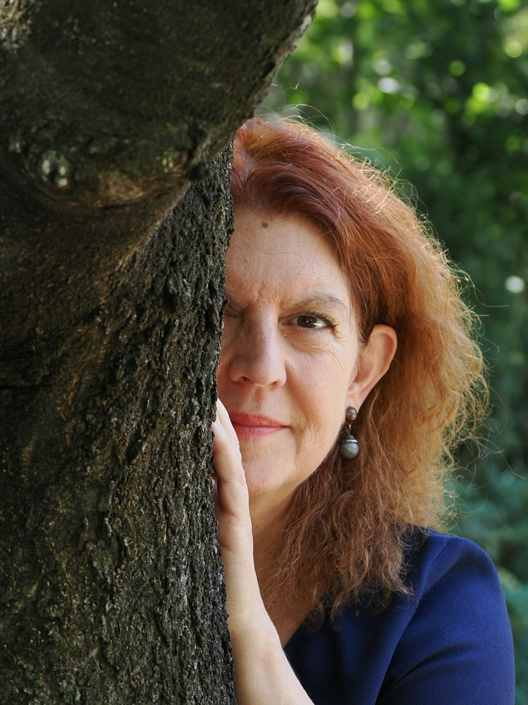

Qui suis-je ?
Orthophoniste depuis de nombreuses années, la biographie s’est peu à peu imposée à moi, avec enthousiasme, comme un prolongement de mon activité professionnelle.
Dans ma pratique, j’ai eu à cœur de faire émerger les mots, les histoires et les ressentis de mes patients, petits ou grands, et j’en mesurais les retombées positives. Mais le cadre du soin n’est pas celui du livre. J’ai donc décidé de me consacrer entièrement à la biographie et à l’écriture.
Pour ce faire, j’ai participé à la formation de biographe auprès de Iscriptura et l’aventure a commencé.
Forte de mon expérience de thérapeute du langage, je connais la place de celui qui écoute, qui reçoit une histoire avec sensibilité et perçois la personnalité du narrateur. Je sais les bienfaits que procure l’écoute attentive pour la personne qui partage son histoire. Mon savoir-faire me permet de mettre le narrateur en confiance et de faire émerger sa parole. Mon amour des mots et ma pratique écrite ont fait le reste.


L’écriture est une passion ancienne. J’aime écrire en variant les styles, en cherchant les mots justes et le bon rythme des phrases. Habituée à la rédaction d’anamnèses, j’ai à cœur d’incarner les personnes. Dans mes écrits libres, j’aime narrer les liens et les histoires humaines en les contextualisant dans la grande histoire ou dans un territoire.
Depuis peu, mon recueil de nouvelles est finalisé et chemine vers la porte d'un éditeur.
Un peu plus sur moi...
Mes passions sont la lecture, l'écriture et le chant. J'arpente les librairies, les ateliers d'écriture et les chœurs de mon département.
Enfant, mes auteurs préférés, après le club des 5, étaient Pagnol. Chaque Noël, je commandais un volume, dans une jolie édition, pour ma collection, que je conserve affectueusement. J’aime découvrir de nouveaux écrivains, c’est pour cela que nous avons créé, avec quelques amies, un club de lecture dans notre village depuis deux décennies. Ma dernière découverte est « L’origine des larmes » de J.P. Dubois. Je suis aussi une adepte de théâtre, assidue au festival d’Avignon, et lectrice des pièces anciennes ou modernes.
Dans ma vie professionnelle, j’ai toujours maintenu une formation continue. Actuellement, je participe au programme de formation à la narration littéraire, organisé par les artisans de la fiction, afin d’améliorer la structure du récit et le rendre toujours plus attrayant pour le lecteur. Toujours curieuse et ouverte sur le monde, je suis aussi inscrite au collège clinique du champ lacanien, afin de maintenir ma pensée active et mon écoute juste.
Je n’oublie pas le chant choral, indispensable à ma santé physique et mentale.

Le chemin de la vie n’est pas lisse et goudronné, il en serait triste et ennuyeux.
Sur ma route, j’ai croisé des pierres, des embûches comme chacun d’entre nous. En 2023, j’ai croisé le Covid long, maladie qui m’a clouée à la maison, dans l’incapacité de travailler.
La musique, la lecture et l’écriture ont été mes bouées, mon ancrage pour ne pas couler. De là est née la décision de concrétiser mon désir ancien de devenir biographe. Le chemin s’éclaircit aujourd’hui et le projet se concrétise.
Voici une petite palette des couleurs de ma vie, riche de ma famille, de mes rencontres
professionnelles et des amitiés tissées au fil des ans.